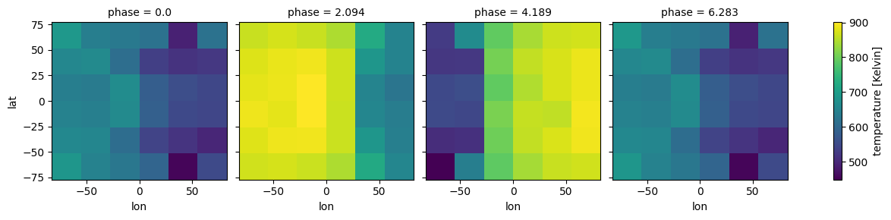
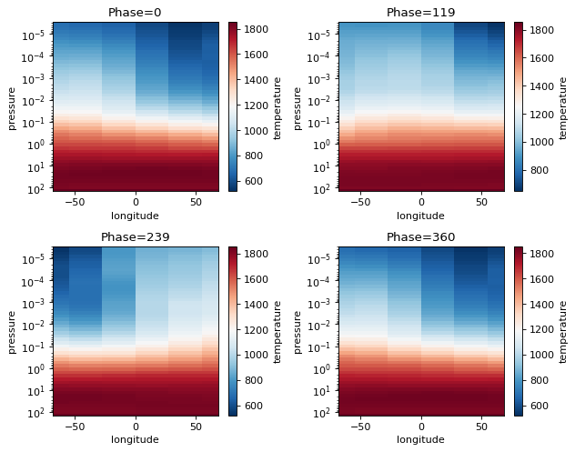
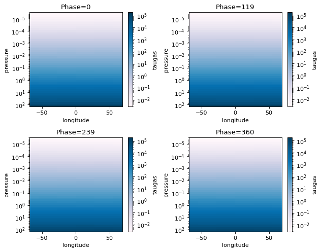
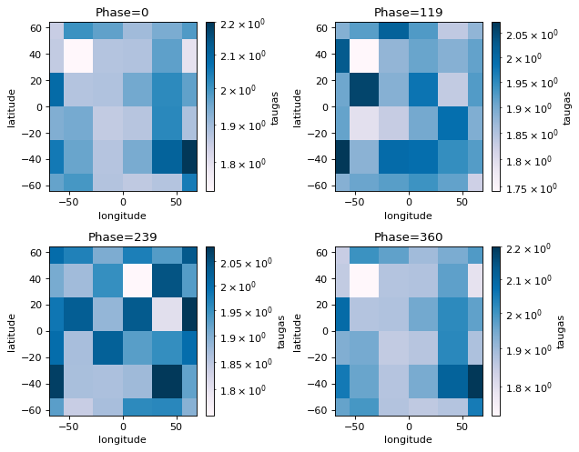
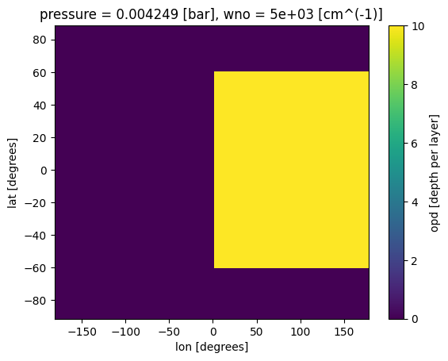
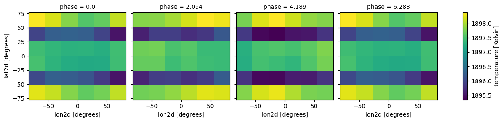
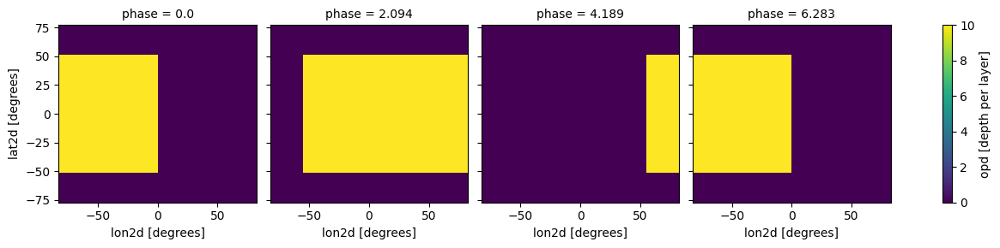
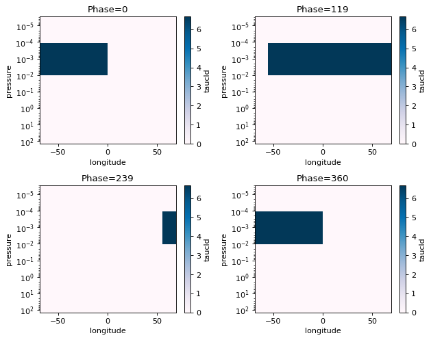
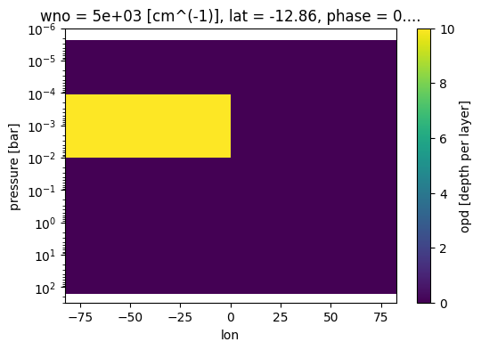

Phase Curves Part 1
From the previous two tutorials you should understand how:
How to convert your GCM input to
PICASO’s requiredxarrayHow to post-process output to append to your GCM output
Here you will learn:
How to compute a phase curve
How to analyze the resulting output
[1]:
from picaso import justplotit as jpi
from picaso import justdoit as jdi
import pandas as pd
import numpy as np
jpi.output_notebook()
WARNING: Failed to load Vega spectrum from /data/reference_data/picaso/ref4/stellar_grids/calspec/alpha_lyr_stis_011.fits; Functionality involving Vega will be severely limited: FileNotFoundError(2, 'No such file or directory') [stsynphot.spectrum]
Run Thermal Phase Curve w/ 3D Input
Computing a phase curve is identical to computing 3D spectra. The only difference is that you will need to rotate the GCM longitude grid such that the visible portion of the planet changes as the phase changes.
We can experiment with doing this with our original xarray input:
[2]:
opacity = jdi.opannection(wave_range=[1,1.7])
[3]:
gcm_out = jdi.HJ_pt_3d(as_xarray=True)
Add Chemistry (randomized for purposes of the example)
Add chemistry, if not already included in your GCM output. Here, we are using the user-defined input.
[4]:
# create coords
lon = gcm_out.coords.get('lon').values
lat = gcm_out.coords.get('lat').values
pres = gcm_out.coords.get('pressure').values
fake_chem_H2O = np.random.rand(len(lon), len(lat),len(pres))*0.1+0.1 # create fake data
fake_chem_H2 = 1-fake_chem_H2O # create data
# put data into a dataset
ds_chem = jdi.xr.Dataset(
data_vars=dict(
H2O=(["lon", "lat","pressure"], fake_chem_H2O,{'units': 'v/v'}),
H2=(["lon", "lat","pressure"], fake_chem_H2,{'units': 'v/v'}),
),
coords=dict(
lon=(["lon"], lon,{'units': 'degrees'}), #required
lat=(["lat"], lat,{'units': 'degrees'}), #required
pressure=(["pressure"], pres,{'units': 'bar'})#required*
),
attrs=dict(description="coords with vectors"),
)
gcm_out.update(ds_chem)
all_gcm=gcm_out
[5]:
all_gcm
[5]:
<xarray.Dataset> Size: 10MB
Dimensions: (lon: 128, lat: 64, pressure: 53)
Coordinates:
* lon (lon) float64 1kB -180.0 -177.2 -174.4 ... 171.6 174.4 177.2
* lat (lat) float64 512B -90.0 -87.19 -84.38 ... 81.56 84.38 87.19
* pressure (pressure) float64 424B 170.6 120.5 ... 3.42e-06 2.416e-06
Data variables:
temperature (lon, lat, pressure) float64 3MB 1.896e+03 1.809e+03 ... 750.7
H2O (lon, lat, pressure) float64 3MB 0.1437 0.1811 ... 0.1127
H2 (lon, lat, pressure) float64 3MB 0.8563 0.8189 ... 0.8873
Attributes:
description: coords with vectorsSetup phase curve grid by defining the type of phase curve (thermal or reflected) as well as the phase angle grid.
If you have not gone through the previous tutorials on xarray, post processing input, and computing 3D spectra, we highly recommend you look at that documentation.
[6]:
case_3d = jdi.inputs()
n_phases = 4
min_phase = 0
max_phase = 2*np.pi
phase_grid = np.linspace(min_phase,max_phase,n_phases)#between 0 - 2pi
#send params to phase angle routine
case_3d.phase_angle(phase_grid=phase_grid,
num_gangle=6, num_tangle=6,calculation='thermal')
Determining the zero_point and the shift parameter
Starting assumptions:
User input lat=0, lon=0 is the substellar point and phase=0 is the nightside transit
If you want to change the zero point use zero_point:
options for zero_point include: ‘night_transit’ (default) or ‘secondary_eclipse’
For each orbital phase, picaso will rotate the longitude grid phase_i+shift_i. For example:
For tidally locked planets
shift=np.zeros(len(phases)). Meaning, the sub-stellar point never changes.For non-tidally locked planets
shiftwill depend on the eccentricity and orbital period of the planet
shift must be input as an array of length n_phase. In this example, we will only explore tidally locked planets and will input a zero array.
Use plot=True below to get a better idea of how your GCM grid is being shifted.
[7]:
case_3d.atmosphere_4d(all_gcm, shift = np.zeros(n_phases), zero_point='night_transit',
plot=True,verbose=False)
/home/nbatalh1/anaconda3/envs/pic313/lib/python3.13/site-packages/xesmf/smm.py:131: UserWarning: Input array is not C_CONTIGUOUS. Will affect performance.
warnings.warn('Input array is not C_CONTIGUOUS. ' 'Will affect performance.')
/home/nbatalh1/anaconda3/envs/pic313/lib/python3.13/site-packages/xesmf/smm.py:131: UserWarning: Input array is not C_CONTIGUOUS. Will affect performance.
warnings.warn('Input array is not C_CONTIGUOUS. ' 'Will affect performance.')
/home/nbatalh1/anaconda3/envs/pic313/lib/python3.13/site-packages/xesmf/smm.py:131: UserWarning: Input array is not C_CONTIGUOUS. Will affect performance.
warnings.warn('Input array is not C_CONTIGUOUS. ' 'Will affect performance.')
/home/nbatalh1/anaconda3/envs/pic313/lib/python3.13/site-packages/xesmf/smm.py:131: UserWarning: Input array is not C_CONTIGUOUS. Will affect performance.
warnings.warn('Input array is not C_CONTIGUOUS. ' 'Will affect performance.')
/home/nbatalh1/anaconda3/envs/pic313/lib/python3.13/site-packages/xesmf/smm.py:131: UserWarning: Input array is not C_CONTIGUOUS. Will affect performance.
warnings.warn('Input array is not C_CONTIGUOUS. ' 'Will affect performance.')
/home/nbatalh1/anaconda3/envs/pic313/lib/python3.13/site-packages/xesmf/smm.py:131: UserWarning: Input array is not C_CONTIGUOUS. Will affect performance.
warnings.warn('Input array is not C_CONTIGUOUS. ' 'Will affect performance.')
/home/nbatalh1/anaconda3/envs/pic313/lib/python3.13/site-packages/xesmf/smm.py:131: UserWarning: Input array is not C_CONTIGUOUS. Will affect performance.
warnings.warn('Input array is not C_CONTIGUOUS. ' 'Will affect performance.')
/home/nbatalh1/anaconda3/envs/pic313/lib/python3.13/site-packages/xesmf/smm.py:131: UserWarning: Input array is not C_CONTIGUOUS. Will affect performance.
warnings.warn('Input array is not C_CONTIGUOUS. ' 'Will affect performance.')
/home/nbatalh1/anaconda3/envs/pic313/lib/python3.13/site-packages/xesmf/smm.py:131: UserWarning: Input array is not C_CONTIGUOUS. Will affect performance.
warnings.warn('Input array is not C_CONTIGUOUS. ' 'Will affect performance.')
/home/nbatalh1/anaconda3/envs/pic313/lib/python3.13/site-packages/xesmf/smm.py:131: UserWarning: Input array is not C_CONTIGUOUS. Will affect performance.
warnings.warn('Input array is not C_CONTIGUOUS. ' 'Will affect performance.')
/home/nbatalh1/anaconda3/envs/pic313/lib/python3.13/site-packages/xesmf/smm.py:131: UserWarning: Input array is not C_CONTIGUOUS. Will affect performance.
warnings.warn('Input array is not C_CONTIGUOUS. ' 'Will affect performance.')
/home/nbatalh1/anaconda3/envs/pic313/lib/python3.13/site-packages/xesmf/smm.py:131: UserWarning: Input array is not C_CONTIGUOUS. Will affect performance.
warnings.warn('Input array is not C_CONTIGUOUS. ' 'Will affect performance.')

[8]:
case_3d.inputs['atmosphere']['profile']
[8]:
<xarray.Dataset> Size: 184kB
Dimensions: (phase: 4, pressure: 53, lat: 6, lon: 6)
Coordinates:
* phase (phase) float64 32B 0.0 2.094 4.189 6.283
* pressure (pressure) float64 424B 170.6 120.5 ... 3.42e-06 2.416e-06
* lat (lat) float64 48B 64.29 38.57 12.86 -12.86 -38.57 -64.29
lat2d (phase, lat) float64 192B 64.29 38.57 12.86 ... -38.57 -64.29
lat2d_clouds (phase, lat) float64 192B 64.29 38.57 12.86 ... -38.57 -64.29
* lon (lon) float64 48B -68.82 -41.39 -13.81 13.81 41.39 68.82
lon2d (phase, lon) float64 192B -68.82 -41.39 -13.81 ... 41.39 68.82
lon2d_clouds (phase, lon) float64 192B -68.82 -41.39 -13.81 ... 41.39 68.82
Data variables:
temperature (phase, pressure, lat, lon) float64 61kB 1.898e+03 ... 550.3
H2O (phase, pressure, lat, lon) float64 61kB 0.1439 ... 0.1303
H2 (phase, pressure, lat, lon) float64 61kB 0.8561 ... 0.8697
Attributes:
description: coords with vectors
regrid_method: bilinearEasy plotting different phases with xarray functionality (remember our H2O selection was random, so the plot will not be to enlightening)
[9]:
case_3d.inputs['atmosphere']['profile']['temperature'].isel(pressure=52).plot(
x='lon', y ='lat',
col='phase',col_wrap=4)
[9]:
<xarray.plot.facetgrid.FacetGrid at 0x7f2ac422fd90>

Set gravity and stellar parameters as usual
[10]:
case_3d.gravity(radius=1,radius_unit=jdi.u.Unit('R_jup'),
mass=1, mass_unit=jdi.u.Unit('M_jup')) #any astropy units available
case_3d.star(opacity,5000,0,4.0, radius=1, radius_unit=jdi.u.Unit('R_sun'))
All is setup. Proceed with phase curve calculation.
[11]:
allout = case_3d.phase_curve(opacity, n_cpu = 3,#jdi.cpu_count(),
full_output=True)
WARNING: Failed to load Vega spectrum from /data/reference_data/picaso/ref4/stellar_grids/calspec/alpha_lyr_stis_011.fits; Functionality involving Vega will be severely limited: FileNotFoundError(2, 'No such file or directory') [stsynphot.spectrum]
WARNING: Failed to load Vega spectrum from /data/reference_data/picaso/ref4/stellar_grids/calspec/alpha_lyr_stis_011.fits; Functionality involving Vega will be severely limited: FileNotFoundError(2, 'No such file or directory') [stsynphot.spectrum]
WARNING: Failed to load Vega spectrum from /data/reference_data/picaso/ref4/stellar_grids/calspec/alpha_lyr_stis_011.fits; Functionality involving Vega will be severely limited: FileNotFoundError(2, 'No such file or directory') [stsynphot.spectrum]
Analyze Phase Curves
All original plotting tools still work by selecting an individual phase
[12]:
#same old same old
wno =[];fpfs=[];legend=[]
for iphase in allout.keys():
w,f = jdi.mean_regrid(allout[iphase]['wavenumber'],
allout[iphase]['fpfs_thermal'],R=100)
wno+=[w]
fpfs+=[f*1e6]
legend +=[str(int(iphase*180/np.pi))]
jpi.show(jpi.spectrum(wno, fpfs, plot_width=500,legend=legend,
palette=jpi.pals.viridis(n_phases)))
Phase Curve Plotting Tools: Phase Snaps
Phase snaps allows you to show snapshots of what is happening at each phase that was computed. x,y,z axes can be swapped out for flexibility.
Allowable x:
'longitude', 'latitude', 'pressure'Allowable y:
'longitude', 'latitude', 'pressure'Allowable z:
'temperature','taugas','taucld','tauray','w0','g0','opd'(the latter three are cloud properties)Allowable collapse: Collapse tells picaso what to do with the extra axes. For instance, taugas is an array that is
[npressure,nwavelength,nlongitude,nlatitude]. If we wantpressure x latitudewe have to collapse wavelength and the longitude axis. To do so we could either supply an integer value to select a single dimension. Or we could supply one of the following asstrinput: [np.mean, np.median, np.min, np.max]. If there are multiple axes you want to collapse, supply an ordered list.
[13]:
fig=jpi.phase_snaps(allout, x='longitude', y='pressure',z='temperature',
y_log=True, z_log=False, collapse='np.mean')#this will collapse the latitude axis by taking a mean

[14]:
fig=jpi.phase_snaps(allout, x='longitude', y='pressure',z='taugas', palette='PuBu',
y_log=True, z_log=True, collapse=['np.mean','np.mean'])
#this will collapse the latitude axis by taking a mean, and the wavelength axis also by taking the mean

[15]:
fig=jpi.phase_snaps(allout, x='longitude', y='latitude',z='taugas', palette='PuBu',
y_log=False, z_log=True, collapse=[20,'np.mean'])
#this will collapse the pressure axis by taking the 20th pressure grid point
#and the wavelength axis by taking the mean
print('Pressure at', allout[iphase]['full_output']['layer']['pressure'][20,0,0])
Pressure at 0.0030016929695969906

Phase Curve Plotting Tools: Phase Curves
We can use the same collapse feature as in the phase_snaps tool to collapse the wavelength axis, when plotting phase curves. For example, we can select a single wavelength point at a given resolution, or we can average over all wavelengths.
Allowable collapse:
'np.mean'ornp.sumfloat or list of float: wavelength in microns (will find the nearest value to this wavelength). Must be in wavenumber range.
For float option, user must specify resolution.
[16]:
to_plot = 'fpfs_thermal'#or thermal
collapse = [1.1,1.4,1.6]#micron
R=100
phases, all_curves, all_ws, fig=jpi.phase_curve(allout, to_plot, collapse=collapse, R=100)
jpi.show(fig)
Run Cloudy Thermal Phase Curve w/ 3D Input
Here we will create a hypothetical cloud path and add it to our fake H2O profile to demonstrate the basics of running a cloudy phase curve
[17]:
# create coords
lon = all_gcm.coords.get('lon').values
lat = all_gcm.coords.get('lat').values
pres = all_gcm.coords.get('pressure').values
pres_layer = np.sqrt(pres[0:-1]*pres[1:])
wno_grid = np.linspace(1e4/2,1e4/1,10)#cloud properties are defined on a wavenumber grid
#create box-band cloud model
fake_opd = np.zeros((len(lon), len(lat),len(pres_layer), len(wno_grid))) # create fake data
where_lat = np.where(((lat>-60) & (lat<60)))#creating a grey cloud path
where_lon = np.where(lon>0)#creating a grey cloud path
where_pres = np.where(((pres_layer<0.01) & (pres_layer>1e-4)))#creating a grey cloud band
for il in where_lat[0]:
for ip in where_pres[0]:
for ilo in where_lon[0]:
fake_opd[ilo,il,ip,:]=10 #optical depth of 10 (>>1)
#make up asymmetry and single scattering properties
fake_asymmetry_g0 = 0.8+ np.zeros((len(lon), len(lat),len(pres_layer), len(wno_grid)))
fake_ssa_w0 = 0.9+ np.zeros((len(lon), len(lat),len(pres_layer), len(wno_grid)))
# put data into a dataset
ds_cld= jdi.xr.Dataset(
data_vars=dict(
opd=(["lon", "lat","pressure","wno"], fake_opd,{'units': 'depth per layer'}),
g0=(["lon", "lat","pressure","wno"], fake_asymmetry_g0,{'units': 'none'}),
w0=(["lon", "lat","pressure","wno"], fake_ssa_w0,{'units': 'none'}),
),
coords=dict(
lon=(["lon"], lon,{'units': 'degrees'}),#required
lat=(["lat"], lat,{'units': 'degrees'}),#required
pressure=(["pressure"], pres_layer,{'units': 'bar'}),#required
wno=(["wno"], wno_grid,{'units': 'cm^(-1)'})#required for clouds
),
attrs=dict(description="coords with vectors"),
)
ds_cld['opd'].isel(pressure=30,wno=0).plot(x='lon',y='lat')
[17]:
<matplotlib.collections.QuadMesh at 0x7f2ab5afee90>

[18]:
case_cld = jdi.inputs()
#setup geometry of run
n_phases = 4
min_phase = 0
max_phase = 2*np.pi
phase_grid = np.linspace(min_phase,max_phase,n_phases)#between 0 - 2pi
#send params to phase angle routine
case_cld.phase_angle(phase_grid=phase_grid,
num_gangle=6, num_tangle=6,calculation='thermal')
#setup 4d atmosphere
case_cld.atmosphere_4d(all_gcm, shift = np.zeros(n_phases), zero_point='night_transit',
plot=True,verbose=False)
#no need to input shift here, it will take it from atmosphere_4d
#in fact, clouds_4d must always be run AFTER atmosphere_4d
case_cld.clouds_4d(ds_cld, iz_plot=30,
plot=True,verbose=False)
#same old planet and star properties
case_cld.gravity(radius=1,radius_unit=jdi.u.Unit('R_jup'),
mass=1, mass_unit=jdi.u.Unit('M_jup')) #any astropy units available
case_cld.star(opacity,5000,0,4.0, radius=1, radius_unit=jdi.u.Unit('R_sun'))
/home/nbatalh1/anaconda3/envs/pic313/lib/python3.13/site-packages/xesmf/smm.py:131: UserWarning: Input array is not C_CONTIGUOUS. Will affect performance.
warnings.warn('Input array is not C_CONTIGUOUS. ' 'Will affect performance.')
/home/nbatalh1/anaconda3/envs/pic313/lib/python3.13/site-packages/xesmf/smm.py:131: UserWarning: Input array is not C_CONTIGUOUS. Will affect performance.
warnings.warn('Input array is not C_CONTIGUOUS. ' 'Will affect performance.')
/home/nbatalh1/anaconda3/envs/pic313/lib/python3.13/site-packages/xesmf/smm.py:131: UserWarning: Input array is not C_CONTIGUOUS. Will affect performance.
warnings.warn('Input array is not C_CONTIGUOUS. ' 'Will affect performance.')
/home/nbatalh1/anaconda3/envs/pic313/lib/python3.13/site-packages/xesmf/smm.py:131: UserWarning: Input array is not C_CONTIGUOUS. Will affect performance.
warnings.warn('Input array is not C_CONTIGUOUS. ' 'Will affect performance.')
/home/nbatalh1/anaconda3/envs/pic313/lib/python3.13/site-packages/xesmf/smm.py:131: UserWarning: Input array is not C_CONTIGUOUS. Will affect performance.
warnings.warn('Input array is not C_CONTIGUOUS. ' 'Will affect performance.')
/home/nbatalh1/anaconda3/envs/pic313/lib/python3.13/site-packages/xesmf/smm.py:131: UserWarning: Input array is not C_CONTIGUOUS. Will affect performance.
warnings.warn('Input array is not C_CONTIGUOUS. ' 'Will affect performance.')
/home/nbatalh1/anaconda3/envs/pic313/lib/python3.13/site-packages/xesmf/smm.py:131: UserWarning: Input array is not C_CONTIGUOUS. Will affect performance.
warnings.warn('Input array is not C_CONTIGUOUS. ' 'Will affect performance.')
/home/nbatalh1/anaconda3/envs/pic313/lib/python3.13/site-packages/xesmf/smm.py:131: UserWarning: Input array is not C_CONTIGUOUS. Will affect performance.
warnings.warn('Input array is not C_CONTIGUOUS. ' 'Will affect performance.')
/home/nbatalh1/anaconda3/envs/pic313/lib/python3.13/site-packages/xesmf/smm.py:131: UserWarning: Input array is not C_CONTIGUOUS. Will affect performance.
warnings.warn('Input array is not C_CONTIGUOUS. ' 'Will affect performance.')
/home/nbatalh1/anaconda3/envs/pic313/lib/python3.13/site-packages/xesmf/smm.py:131: UserWarning: Input array is not C_CONTIGUOUS. Will affect performance.
warnings.warn('Input array is not C_CONTIGUOUS. ' 'Will affect performance.')
/home/nbatalh1/anaconda3/envs/pic313/lib/python3.13/site-packages/xesmf/smm.py:131: UserWarning: Input array is not C_CONTIGUOUS. Will affect performance.
warnings.warn('Input array is not C_CONTIGUOUS. ' 'Will affect performance.')
/home/nbatalh1/anaconda3/envs/pic313/lib/python3.13/site-packages/xesmf/smm.py:131: UserWarning: Input array is not C_CONTIGUOUS. Will affect performance.
warnings.warn('Input array is not C_CONTIGUOUS. ' 'Will affect performance.')
/home/nbatalh1/anaconda3/envs/pic313/lib/python3.13/site-packages/xesmf/smm.py:131: UserWarning: Input array is not C_CONTIGUOUS. Will affect performance.
warnings.warn('Input array is not C_CONTIGUOUS. ' 'Will affect performance.')
/home/nbatalh1/anaconda3/envs/pic313/lib/python3.13/site-packages/xesmf/smm.py:131: UserWarning: Input array is not C_CONTIGUOUS. Will affect performance.
warnings.warn('Input array is not C_CONTIGUOUS. ' 'Will affect performance.')
/home/nbatalh1/anaconda3/envs/pic313/lib/python3.13/site-packages/xesmf/smm.py:131: UserWarning: Input array is not C_CONTIGUOUS. Will affect performance.
warnings.warn('Input array is not C_CONTIGUOUS. ' 'Will affect performance.')
/home/nbatalh1/anaconda3/envs/pic313/lib/python3.13/site-packages/xesmf/smm.py:131: UserWarning: Input array is not C_CONTIGUOUS. Will affect performance.
warnings.warn('Input array is not C_CONTIGUOUS. ' 'Will affect performance.')
/home/nbatalh1/anaconda3/envs/pic313/lib/python3.13/site-packages/xesmf/smm.py:131: UserWarning: Input array is not C_CONTIGUOUS. Will affect performance.
warnings.warn('Input array is not C_CONTIGUOUS. ' 'Will affect performance.')
/home/nbatalh1/anaconda3/envs/pic313/lib/python3.13/site-packages/xesmf/smm.py:131: UserWarning: Input array is not C_CONTIGUOUS. Will affect performance.
warnings.warn('Input array is not C_CONTIGUOUS. ' 'Will affect performance.')
/home/nbatalh1/anaconda3/envs/pic313/lib/python3.13/site-packages/xesmf/smm.py:131: UserWarning: Input array is not C_CONTIGUOUS. Will affect performance.
warnings.warn('Input array is not C_CONTIGUOUS. ' 'Will affect performance.')
/home/nbatalh1/anaconda3/envs/pic313/lib/python3.13/site-packages/xesmf/smm.py:131: UserWarning: Input array is not C_CONTIGUOUS. Will affect performance.
warnings.warn('Input array is not C_CONTIGUOUS. ' 'Will affect performance.')
/home/nbatalh1/anaconda3/envs/pic313/lib/python3.13/site-packages/xesmf/smm.py:131: UserWarning: Input array is not C_CONTIGUOUS. Will affect performance.
warnings.warn('Input array is not C_CONTIGUOUS. ' 'Will affect performance.')
/home/nbatalh1/anaconda3/envs/pic313/lib/python3.13/site-packages/xesmf/smm.py:131: UserWarning: Input array is not C_CONTIGUOUS. Will affect performance.
warnings.warn('Input array is not C_CONTIGUOUS. ' 'Will affect performance.')
/home/nbatalh1/anaconda3/envs/pic313/lib/python3.13/site-packages/xesmf/smm.py:131: UserWarning: Input array is not C_CONTIGUOUS. Will affect performance.
warnings.warn('Input array is not C_CONTIGUOUS. ' 'Will affect performance.')
/home/nbatalh1/anaconda3/envs/pic313/lib/python3.13/site-packages/xesmf/smm.py:131: UserWarning: Input array is not C_CONTIGUOUS. Will affect performance.
warnings.warn('Input array is not C_CONTIGUOUS. ' 'Will affect performance.')


Run cloudy phase curve!
[19]:
cldout = case_cld.phase_curve(opacity, n_cpu = 3,#jdi.cpu_count(),
full_output=True)
[20]:
#same old same old
wno =[];fpfs=[];legend=[]
for iphase in cldout.keys():
w,f = jdi.mean_regrid(cldout[iphase]['wavenumber'],
cldout[iphase]['fpfs_thermal'],R=100)
wno+=[w]
fpfs+=[f*1e6]
legend +=[str(int(iphase*180/np.pi))]
jpi.show(jpi.spectrum(wno, fpfs, plot_width=500,legend=legend,
palette=jpi.pals.viridis(n_phases)))
[21]:
to_plot = 'fpfs_thermal'#or thermal
collapse = [1.1,1.4,1.6]#micron
R=100
phases, all_curves, all_ws, fig=jpi.phase_curve(cldout, to_plot, collapse=collapse, R=100)
jpi.show(fig)
[22]:
fig=jpi.phase_snaps(cldout, x='longitude', y='pressure',z='taucld', palette='PuBu',
y_log=True, z_log=False, collapse=['np.max','np.mean'])
#this will collapse the latitude axis by taking a mean, and the wavelength axis also by taking the mean

[23]:
fig, ax = jpi.plt.subplots(figsize=(6, 4))
case_cld.inputs['clouds']['profile']['opd'].isel(phase=0,
lat=3,wno=0).plot(
x='lon',y='pressure',ax=ax)
ax.set_ylim([3e2,1e-6])
ax.set_yscale('log')

[ ]: